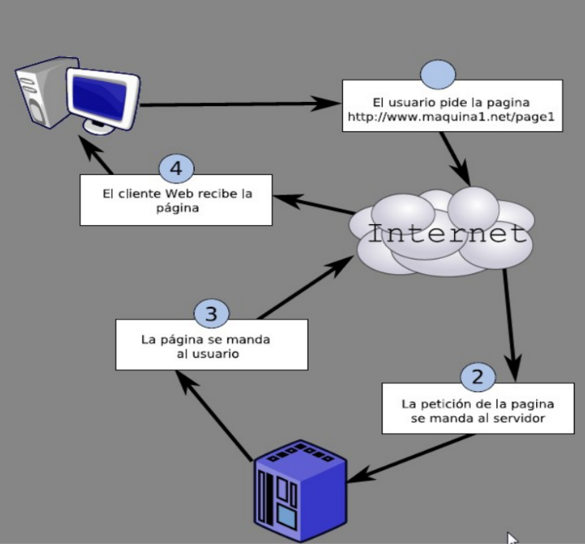
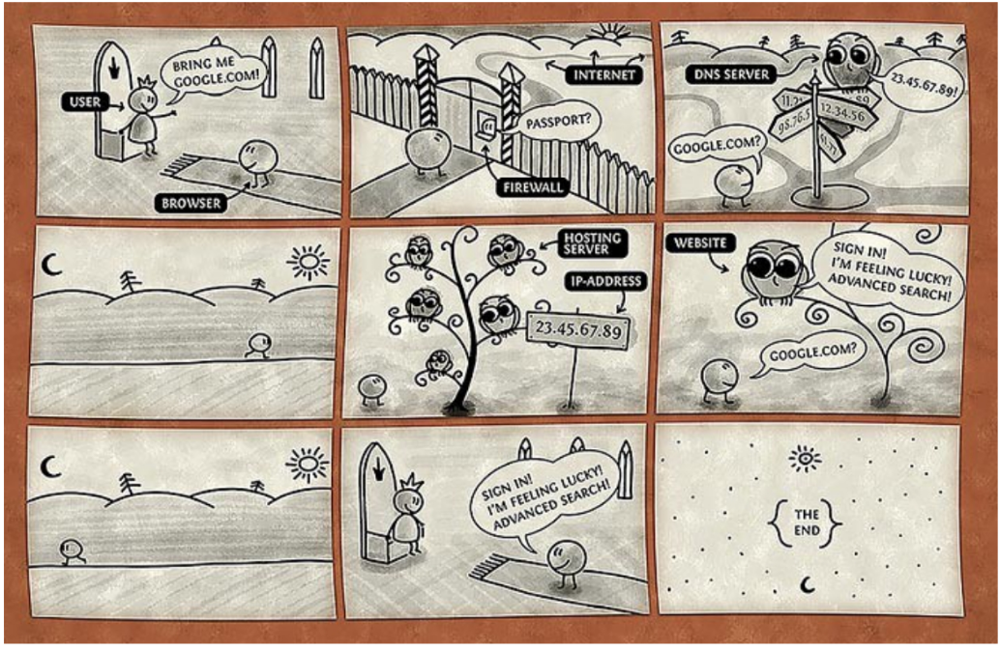

La Internet y la Web
Manuel Vargas (mfvargas@gmail.com)
Agosto de 2019
Internet

{kind=link}
Sistema global de redes de comunicación interconectadas que utilizan la familia de protocolos TCP/IP para enlazar dispositivos en todo el mundo.
Sus orígenes se remontan a 1969, en la red conocida como ARPANET, que inicialmente conectó cuatro universidades de Estados Unidos.
Es descentralizada (nadie la gobierna ni tiene el control total).
(Wikipedia)
TCP/IP
- SMTP (Simple Mail Transfer Protocol)
- FTP (File Transfer Protocol)
- IRC (Internet Relay Chat)
- DNS (Domain Name System)
- HTTP (Hypertext Transfer Protocol)
- ...
Direcciones IP (Internet Protocol)
- IPv4: define una dirección de 32 bits (ej. 201.206.171.2)
- IPv6: define una dirección de 128 bits (ej. 2001:0db8:85a3:0000:0000:8a2e:0370:7334)
DNS (Domain Name System)
La Web
La World Wide Web (WWW) es un sistema de distribución de documentos identificados por sus URL (Uniform Resource Locator) y accesibles a través de:
- El protocolo HTTP (Hypertext Transfer Protocol) para la transmisión de datos.
- La sintáxis HTML (Hypertext Markup Language) para elaborar páginas web.
¿Cómo funciona la Web?

